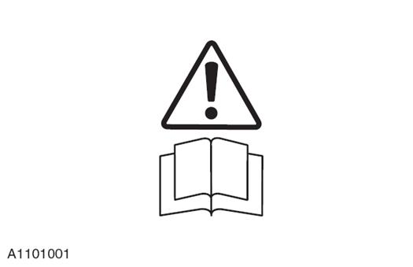
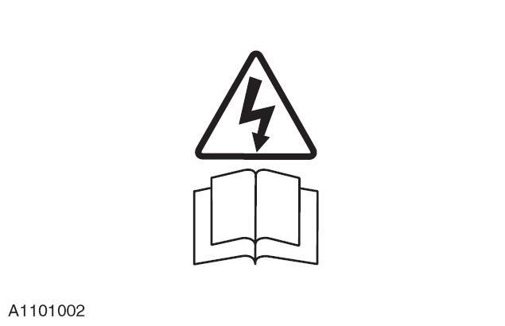
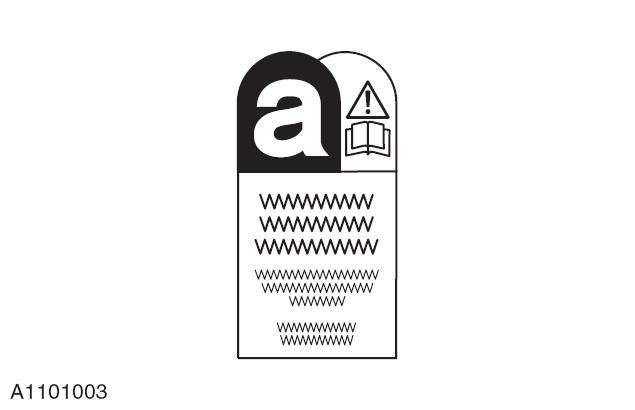
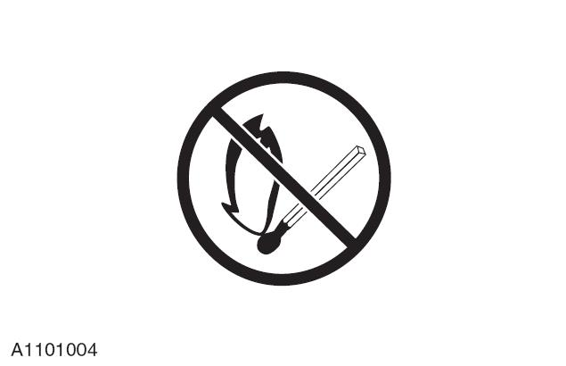
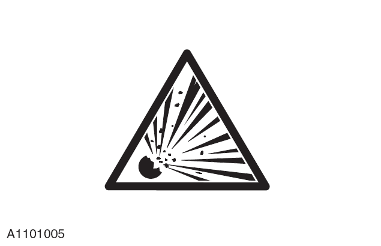
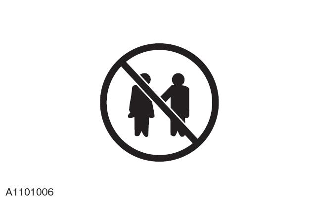

很多与车辆保养和维修有关的操作都会对人体健康带来威胁及危害。下面列出了很多危险的操作及和它们相关的危险物品和设备。要特别注意下列危险物品。
所列出的内容并非完整，因此在进行实际操作时应随时把安全健康放在首位。
在使用任何产品前，应查阅该产品的制造商或供应商提供的材料安全规格表。
腐蚀性纯碱、硫酸。
电解液和清洁材料。
对皮肤、眼、鼻、喉、衣物有刺激性和腐蚀性的物质，易燃物品，能破坏普通防护服的物质。
应避免将此类物质溅在皮肤、眼睛和衣物上。应穿上合适的防护罩衣，戴上防护手套和护目镜。不要吸入酸雾。在工作场所附近放置一些眼部冲清洗瓶、清洁水和香皂，以便意外事故时可以随时取用。
放置“ 危害眼睛” 的标志。
易燃、易爆物质 - 必须遵守禁止吸烟的规定。
安全气囊安装在方向盘和乘客前的仪表板上用来保护前排驾乘人员的生命安全。
安全气囊内含有高爆发物质，在点燃时会产生高温高压的气体(2,500 ℃ )。
用于气囊的气体发生剂为叠氮化钠。此物质是被密封在模块内的，气囊展开时会完全释放。切勿试图自己打开气囊，这样会导致叠氮化钠爆炸。如果气体发生器发生破裂，处理时必须穿着完全防护的工作服。
在气囊正常展开后，在处理现场时必需戴上防护手套和护目镜。
使用过的安全气囊必须严格按当地法规，用塑料袋装好后，丢弃在指定的化学垃圾处理场。
如直接与产生的气体接触后，请用水彻底清洗现场( 受到影响的区域)。如有需要，请寻求医疗帮助。
气囊- 应执行的操作：
垂直放置气囊。
保持气囊干燥。
搬运气囊时，将气囊没有封口的一面朝向身体。
气囊应将封口面朝上。
应仔细检查气囊是否损坏。
在连接气囊时，应站在侧面。
应确认所有测试设备经过正确的校准和维护。
在运走已展开的气囊后要清洗双手。
气囊- 应禁止的操作：
禁止把易燃物质或气体发生器与气囊放在一起。
气体发生器的储存温度不能超过80 ℃。
不能颠倒放置气囊。
禁止打开气体发生器外壳。
禁止在气囊上放置任何东西。
禁止使用已损坏的气囊。
气囊和气体发生器燃烧后十分钟内禁止触摸。
禁止在气囊线路上使用电表探针。
易燃物质 - 必须遵守禁止吸烟的规定。
制冷剂与皮肤接触会引起冻伤。
必须严格遵循制造商的指导。佩戴防护手套和眼镜可避免强光照射。
如果制冷剂不慎接触到皮肤或眼睛，请立即用水冲洗。眼睛不慎沾上制冷剂要用正确的清洗剂来冲洗，千万不要揉搓。必要时寻求医疗救助。
空调制冷剂 - 禁止的事项：
禁止把空调制冷剂暴晒在阳光下或加热。
在加注制冷剂时，请不要竖直放置加注瓶，加注口应朝下。
防止空调制冷剂瓶上结霜。
防止跌落空调制冷剂瓶。
任何情况下，都禁止向大气中排放空调制冷剂。
禁止混合使用制冷剂，如：氟利昻R12和R134a。
易燃物质 - 必须遵守禁止吸烟的规定。
总的来说，密封剂和粘接剂应储存在禁烟区域内，必须干净整洁的保管，例如放置在一次性纸巾覆盖的货架上、最好能从包装箱中取出分开放置；包装箱，包括分装箱应贴相应的标签。
溶剂密封剂和粘接剂
必须遵循制造商的说明书。
水溶性密封剂和粘接剂
此类以高分子乳状液和橡胶乳胶为基础的水溶性粘胶可能含有少量的挥发性有毒物质和对人类有害的化学物质。应避免此类物质与眼睛和皮肤接触，使用时要保证通风良好。
热熔粘胶
此类物质的固态是安全的。在熔融状态下它们会引起燃烧并会释放有毒气体危害人的健康。作业时必须穿着正确的防护工作服，使用自动断电的功能恒温加热器，并应有足够的抽风设备。
树脂型密封剂和粘接剂，例如环氧化物和树脂甲醛
必须在通风良好的地方混合粘合剂，因为混合时会释放出有害的或有毒的挥发性物质。
皮肤与未干的树脂和硬化剂接触会引起皮炎，一些有毒有害的化学物质会被皮肤吸收。
如果溅出的物质进入眼晴会造成眼睛损坏。所以在作业时应保持通风良好并避免与皮肤和眼睛接触。
厌氧性的氰基丙烯酸盐粘合剂和丙烯酸的粘合剂
此类粘合剂多数有刺激性、造成过敏或对皮肤和呼吸道有损害。其中一些对眼睛有强刺激性。在作业时应避免此类物质接触到皮肤和眼睛并遵循制造商的说明书。
禁止让氰基丙烯酸盐粘合剂接触皮肤和眼睛。
若不慎沾上，请立即搭上干净的湿布或看医生。禁止用手接触受伤部位。选择通风良好的地方，因为水蒸气会刺激眼鼻。
异氰酸盐 ( 聚亚安酯) 密封剂和粘接剂
任何患有哮喘和其他呼吸系统疾病的人都不能接触或接近此类物质。
过分暴露此类物质会刺激眼睛和呼吸系统。浓度过高会刺激神经系统，情况严重时会使人失去知觉。长时间接触此类物质会对身体健康产生影响。
长时间与皮肤接触会刺激皮肤，严重的会产生皮炎。若不慎进入眼睛，会损伤眼睛。任何喷洒动作必须在通风良好的地方进行，并使蒸气与喷洒的颗粒远离呼吸区域。
作业时必须戴上适当的手套和眼镜、口罩。
防冻剂包括：异丙醇、乙二醇、甲醇。
高易燃、易燃、可燃。
用于汽车冷却系统、雨刮喷水中的溶液。
防冻剂在受热时，会产生蒸气。避免吸入此类气体。
防冻剂或其他有害物质可能会通过皮肤进入人体。如果不慎喝下防冻剂可能会致命，必须及时就医。
禁止在任何和食品加工或饮水系统有联系的冷却或工业用水系统中使用此类物质。
蓄电池在充电时释放的气体会引起爆炸。在蓄电池充电时禁止使用明火或火星。必须确保通风良好。
制动液如溅到皮肤和眼睛上会有轻微的刺激。应尽量避免与皮肤和眼睛接触。由于蒸气压力比较低，所以常温下不会吸入对人体有害的蒸气。
化学物质包括：溶剂、密封剂、粘合剂、油漆、树脂泡沫、电解液、防冻剂、制动液、机油和油脂。使用和储存此类物质必须小心。它们可能有毒、有害、有腐蚀刺激性、易燃并会产生一些有害的气体和灰尘。
如果长时间暴露此类化学物质，会不同程度对人体健康产生影响。
化学物质 - 应进行的操作：
应仔细阅读危险品容器上的标签和相应宣传资料及说明书以获得相关的安全信息。可从制造商处获得该物质的安全健康数据表。
如果皮肤和衣物被此类化学物质污染，应及时清理。换下污染严重的衣物并清洗干净。
应编写作业操作规程，并穿戴防护衣物来防止此类物质污染皮肤和眼睛，防止吸入有害气体、酸雾、灰尘、烟雾等和此类物质引起的燃烧和爆炸。
在接触此类物质后应立即清洗双手。
工作区域应保持干净、整洁和无泄漏。
应严格按照国家和当地法规来管理和储存化学物质。
防止儿童接触。
化学物质 - 禁止的操作：
禁止不按制造商的指导擅自混合化学物质。混合某些化学物质会产生有毒有害物质；释放出有毒有害的气体或发生爆炸。
禁止在狭窄的空间内，比如在有人的汽车里喷涂化学物质，特别是溶剂化学品。
禁止不按制造商的指导擅自加热或燃烧化学物质，某些化学物质是易燃品， 有些物质在燃烧时会释放有毒或有害气体。
请勿敞开放置容器，从中散发的气体会对人体产生毒害或引起爆炸。某些比空气重的气体会聚集在狭小的区域内。
请勿用未贴标签的容器运输化学物品。
禁止用化学品清洗双手或衣物。化学物质特别是溶剂和燃油会使皮肤变得干燥，还会刺激皮肤患上皮炎，或通过皮肤吸收一些有毒有害的物质。
未经专门处理，贮存过化学物质的空罐禁止存放其他物品。
请勿嗅闻化学物质。瞬时高浓度的气体会导致中毒或造成伤害。
属易燃物质，必须遵守严禁烟火的规定。
此类物质种类繁多，请遵循制造商的说明书。其中可能会含有溶剂、树脂或成品油。应避免此类物质接触到皮肤和眼睛。不能在封闭的空间内喷涂此类物质，只能在通风良好的情况下进行。
粉尘可能有毒害并刺激人的皮肤。避免吸入粉状化学物质的尘埃或其他尘埃。在空气流通不畅时应戴上口罩。
易燃物质的极细粉尘会引起爆炸。应避免爆炸临界极限和火源。
错误使用或使用有缺陷的电气设备会造成电击。
应定期检测所有的电气设备并保证设备完好。有缺陷的设备应有明确标识并应搬离工作区域。应确保导线、电缆、插头、插座无磨损、打结、切断、破裂或其他损坏。切勿让电气设备和电线接触到水，并保证电气设备有保险丝保护。
正确使用电气设备、不使用有问题的设备，违反此操作会有致命的危险。
在举升汽车的时候应确保电器工具的电线不被截断或损坏。并确保电工受过急救培训。
如果被电击：
在接触被击者之前先关掉电源。
如果无法关掉电源，则用干燥的非导电材料将受害者推离或拖离电源。
立即进行心肺复苏。
进行医疗求助。
隔音纤维用于隔绝声音和噪音。纤维素和切屑会引起皮肤刺激。这通常是物理影响并不是化学反应。必须编写工作实践指南和佩戴手套来避免此类物质长时间与皮肤接触。
跟汽车维修有关的很多物质都是易燃物质。其中一些在燃烧后会释放出有毒或有害气体。在储存和使用易燃物质或溶剂时，特别是在焊接或靠近电气设备时应严格注意防火安全。在使用焊接设备或加热设备之前，应确保周围无易燃物，并在附近放置灭火器。
维修车间除了必须满足法律要求之外，还必须配备受过急救培训的人员。
任何物质溅入眼睛后必须用清水冲洗至少10 min。
皮肤被化学物质污染后应用水和香皂清洗。被某些物质灼伤后应立即用冷水冲洗降温。如果吸入了烟尘，应立即转到空气新鲜的地方。如果仍不能奏效请立即送往医院。
如果不慎喝下某些液体，请立即看医生并告知液体的名称和成分。除非标签上特别说明，否则不要试图呕吐。
泡沫用来隔绝声响和噪音。座椅和减震器中也有泡沫。
严格按生产厂家的说明书来进行操作。未反应的成分有刺激性，会对皮肤和眼睛有伤害。请佩戴手套和防护镜。
患有慢性呼吸系统疾病、哮喘、支气管炎或有过敏史的人不允许在未硫化的材料处或其附近进行作业。某些成分、蒸气或喷雾会有刺激性并可能有毒害。
千万不要吸入蒸气和喷雾。必须在通风良好的地方使用这些物质并要做好保护呼吸系统的措施。在喷雾后，不要立即除去口罩须等到雾气完全散开。
燃烧未熟化的组件和已熟化的泡沫会产生有毒有害气体。在处理泡沫的时候严禁吸烟、使用明火或电动工具。任何对泡沫进行加热切割必须在空气流通的地方进行。
所有的工具设备都应保持完好状态，如有需要应使用正确的安全设备。
维修工具/ 设备的使用不要超出它的设计范围。维修设备如：举升机、千斤顶等不能超负荷使用。由于超负荷对设备带来的损害一般都不太明显，但当您下次使用该设备时可能会出现致命破坏。
禁止使用损坏的或有故障的工具/ 设备，特别是高速运转的设备如：砂轮。损坏的砂轮会在无任何征兆的情况下碎裂并使人重伤。
在使用砂轮、錾子或喷砂设备时应佩戴眼镜保护工具。在使用喷砂设备或喷雾设备时应戴上适当的防护面具。并确认在通风良好的地方操作，以防止灰尘、酸雾和烟雾的发生。
高压设备特别是接头处应定期检查并保持设备完好。
禁止把高压管口，例如柴油加注口等直接对准人的皮肤，因为油液会穿透人的皮下组织引起严重的疾病。
维修车间内材料的使用和处理都必须符合关于安全健康的法律条款。
为了营造一个安全的工作环境并避免环境污染，维修车间人员必须熟悉国家关于安全健康的法律条款。
应避免长时间的接触矿物油。所有的润滑油和润滑脂都对眼睛和皮肤有刺激性。
废机油
长时间的接触矿物油会使皮肤干燥，对人有刺激性并患上皮炎。另外，如果使用含有有毒有害物质的矿物油会患皮肤癌。必须提供适当的皮肤保护设备和清洗设备。
禁止使用废机油作为润滑油，或用于任何可能接触皮肤的设备中。
健康防范：
避免长时间与油液特别是发动机油接触。
穿戴防护衣物包括手套。
请勿将沾有油污的抹布放在口袋里。
避免油液污染衣物。
请不要穿油污严重的衣物和鞋子。防护服应定期清洗。
如不慎受伤应立即急救。
在工作之前，使用防护霜来保护双手。
请用香皂和清水清洗油污。禁止用汽油、柴油、煤油、稀释剂和溶剂来清洗皮肤。
如果皮肤出现异样，请立即就医。
如有可能，请先把油液进行脱脂。
如果油液会对眼睛造成伤害，应佩戴护目镜。
环境保护
只能在核准的地方燃烧废弃的发动机油。如果对地点不确定，请与当地的权威机构确认。
必须由认可的废物处理承包商或废油回收商在指定的地点处理废弃的发动机油。如有疑问请向当地权威机构咨询。
直接把废弃的机油倾倒在地面、下水道、排水沟或水源是违法的。
某些操作产生很高分贝的噪音，可能会损害听力，此时应戴上护耳器。
油漆属于易燃物质，必须遵守禁止吸烟的规定。
单组分
可能含有一些有毒有害的色素、干燥剂和其他溶剂。只能在通风良好的地方进行喷涂。
多组分
可能含有一些有毒有害的未反应的树脂和树脂固化剂。必须遵守制造商的指导。
喷漆必须在远离人群的通风良好的地方进行。操作人员应戴上防护口罩。
焊料是很多金属的混合物，混合物的溶点比组成的金属( 通常是铅和锡) 低。在焊接的过程中通常不会产生有毒的含铅气体。不能使用含氧的乙炔火焰，因为它们温度很高会产生含铅的烟雾。
在火焰喷射到带有油脂的表面上时可能会产生一些烟雾，应避免吸入。除去多余的焊料必须格外小心，并确保不会产生细小的铅尘，如吸入铅尘会对人体有危害。必须佩戴防毒面具。焊料的泄露物和锉屑必须统一收集并迅速处理，以防止空气被铅污染。应避免摄取铅或吸入焊料的灰尘。
常见溶剂包括：丙酮、石油溶剂油、甲苯、二甲苯和氯仿等。使用干净的和脱蜡物质、油漆、塑料、树脂和稀释剂。某些物质是易燃物品。同此类物质长期接触会使皮肤干燥，并伴有刺激性。一些有毒有害物质会通过皮肤吸收。
如不慎溅入眼睛内会有很强的刺激性甚至会使人失明。高浓度的溶剂暴露在空气中产生的蒸气或烟雾会刺激人的眼、喉，使人头昏头疼。严重时会使人失去知觉。
低浓度溶剂长期过分暴露于空气中会产生蒸气和烟雾，由于无明显的症状，往往会产生更严重的毒害。
应避免此类物质溅在人的眼睛、皮肤和衣物上，应穿戴着防护工作服、防护手套和防护眼镜。
在使用此类物质时，应确保场地通风情况良好，尽量避免吸入烟雾、蒸气和喷雾，并保持容器密封。
禁止在狭窄的空间使用。
在喷涂带有溶剂的物质如：油漆、粘接剂时，应确保场地通风情况良好，空气流通不畅时，应使用防毒面具。
只有在制造商的特别指导下，才可进行加热或燃烧作业。
禁止临时拼凑起重装备。
重物在被举起或悬挂时具有危险性。切勿在没有支撑的、悬挂的或举升的物体下作业，如：悬挂的发动机。
应确保起重设备如：千斤顶、举升机、轮轴支架和吊带等设备完好并定期检查。
焊接程序包括（电阻焊）点焊、电弧焊和气焊。
电阻焊
点焊时会释放出大量高速的融化金属颗粒，必须注意保护皮肤和眼睛。
电弧焊
电弧焊时会有大量紫外线辐射，紫外线辐射会对操作员和其他附近的人员的皮肤和眼睛带来伤害。气体保护焊相当危险，必须穿戴个人防护服并使用防护屏保护其他人。
在使用电弧焊时，建议隐型眼镜佩戴者恢复佩戴普通眼镜。弧光会释放出微波使隐型眼镜佩戴者角膜与镜片间因失水而干涩，甚至会使人失明。在使用电弧焊时会有金属飞溅，必须采取正确的眼睛和皮肤的防护措施。
当焊芯或其保护层被污染时，焊接弧光的热量会使金属熔池在焊接时产生烟和气体，这些气体可能有毒害，应避免吸入此类气体。必须排除工作区域内的有毒气体，特别是在空气流通不畅时或预先知道有大量焊接时。在特别情况下或在狭小的区域内进行焊接必须戴上氧气罩。
气焊( 气割)
在焊接和切割时会使用氧乙炔焰切割，应特别小心此类气体的泄漏，如不小心会带来燃烧和爆炸。
使用气焊时会产生金属溅落物，必须采取适当的保护皮肤和眼睛的措施。焊接火焰非常刺眼，必须保护眼睛，由于气焊产生的紫外线比电弧焊时要少，可以使用防护眼镜。
使用气焊时会产生一些有毒气体，但此类有毒气体是由焊接涂层特别是切割损坏部分产生的。应避免吸入此类气体。
铜焊时，铜焊条中的金属会产生有毒气体，如果铜焊条中有镉时会非常危险。当此类情况发生应特别小心避免吸入有毒气体，并寻求专家的帮助。
在有易燃物（如燃油从油箱挥发或汽化）的汽车内，不论进行何种焊接或切割，之前都应采取特别的防范措施。
在多种汽车部件上都会看见警告标识。禁止移动这些标识。车主或维修人员必须注意此类警告标识。
最常见的警告标识如下并附有注释。
表示在接触或试图调节维修任何部件时，应参考专业使用手册的相关部分。

表示当心内在的高电压。在电驱运转时禁止触摸。

此标识表示当心部件中含有腐蚀性物质。

此标识表示附近有易燃易爆的液体或蒸气禁止使用明火。

此标识（通常同以上4个警告标识相连）表示附近有可能会爆炸的物体。

此标识表示禁止小孩进入无人管理的地方。
